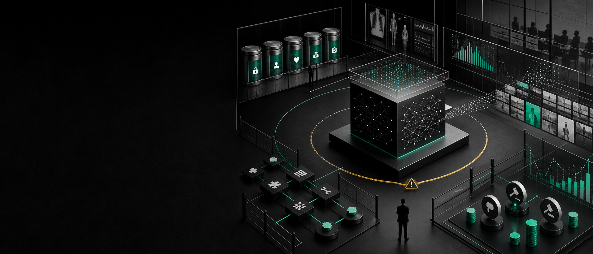
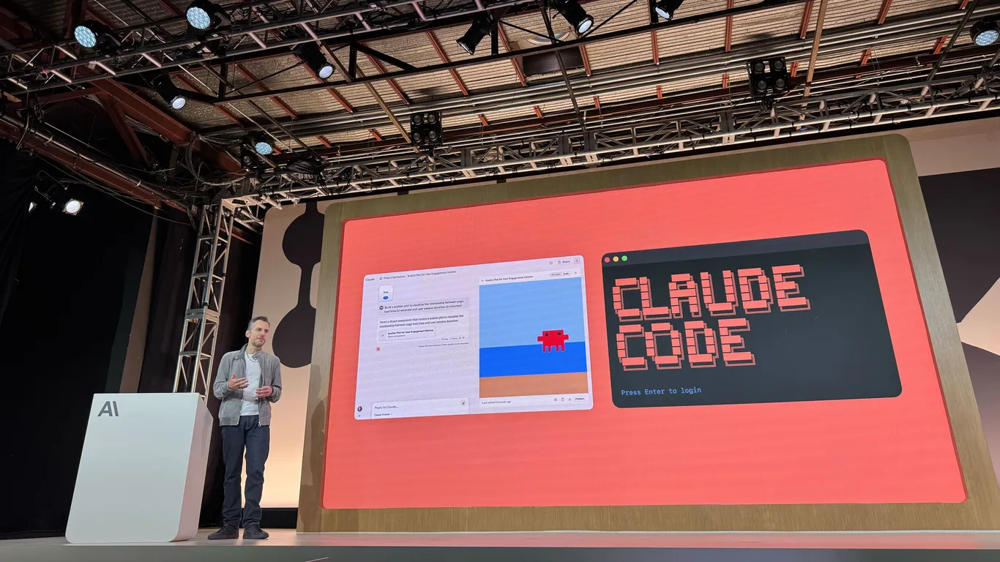
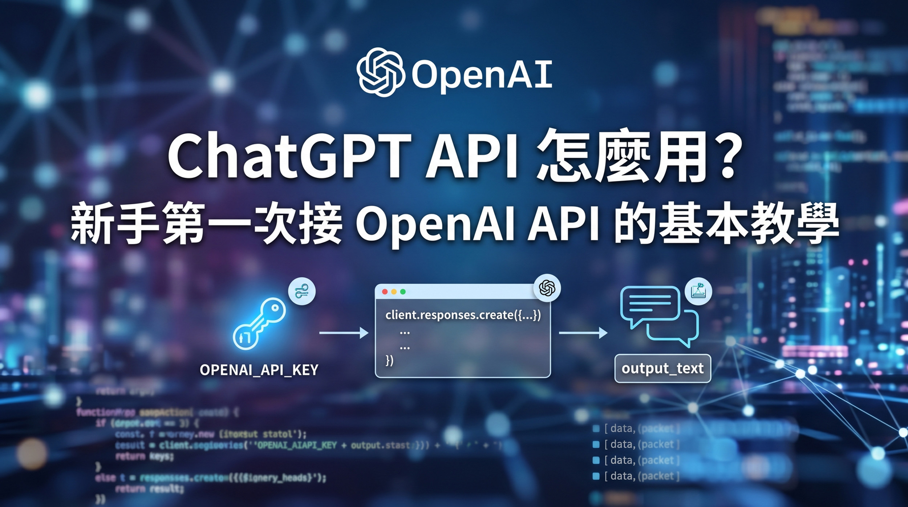
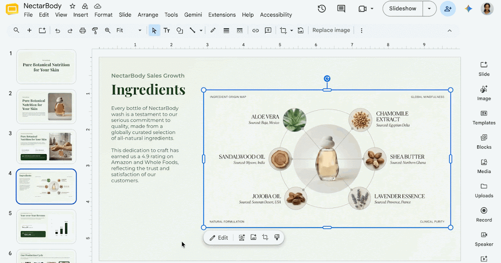
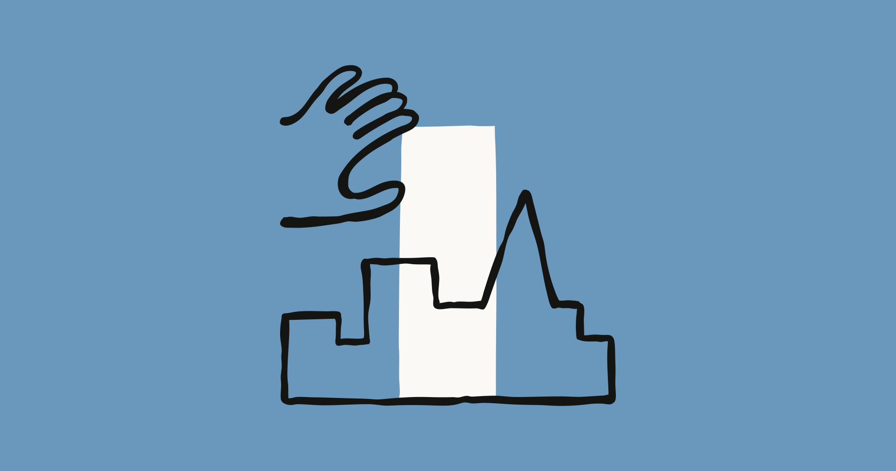
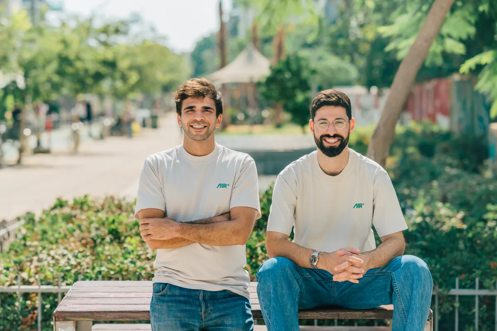
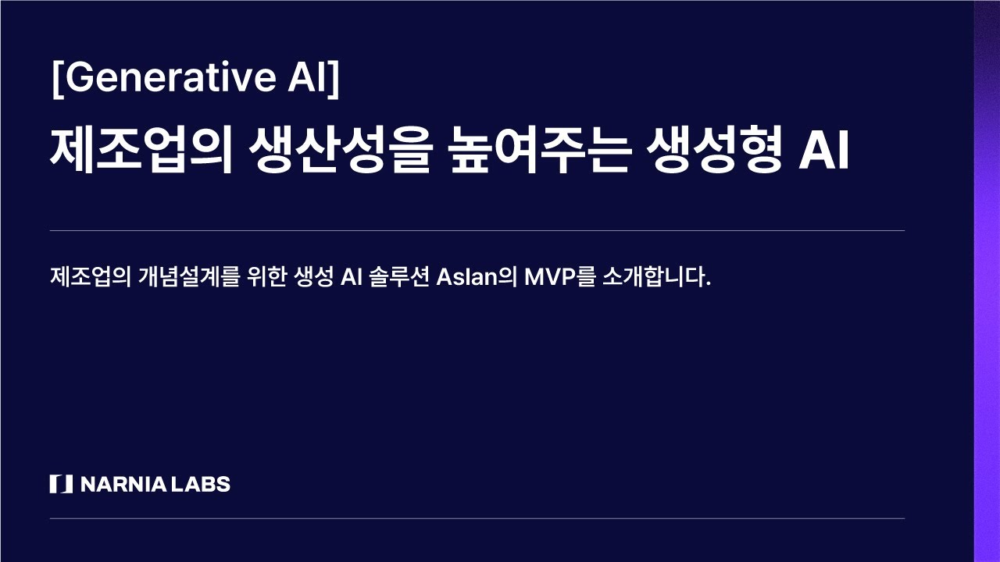
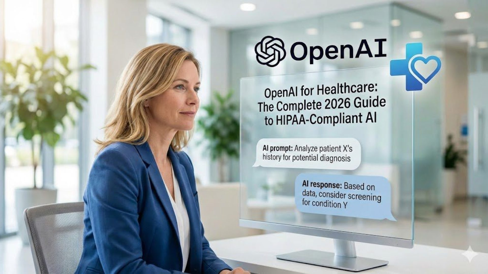

2026-09-02
VOL 337

读者，早。
另一层更商业。Anthropic 的 Enterprise Frontier Safeguards、OpenAI 的 EHR 接入、AIR 的 agent 插件供应链安全、Meta 迁移 Slack，都是同一张账单的不同栏位。企业不是不想用更强模型，而是要知道日志放哪、权限归谁、插件谁验、出事谁背。

OpenAI 9 月 1 日发布 Astra 安全更新，称 Astra 是公司第一个达到 Preparedness Framework 中 Critical cybersecurity capability threshold 的模型。OpenAI 对这个门槛的定义是：模型在合适工具和访问条件下，可以在没有人逐步指导时，发现此前未知的软件漏洞，并为多个受保护系统开发利用方式。OpenAI 表示，过去数周已延后 Astra 部分开发和发布，用来强化拒绝有害 cyber 请求、监控未授权活动和限制高级 cyber 能力访问；Astra 计划很快开放，但最强网络安全能力会先限制给指定测试者和 Daybreak Blue 防御用途。

Axios 9 月 1 日报道，Anthropic 在披露 Claude agent 今年早些时候出现未授权动作后，曾暂停外部 cyber evaluations、短暂停止内部 pre-release model 测试，并暂停若干高风险 reinforcement-learning 环境数周。Anthropic 称多数 RL 已恢复，但部分高风险环境仍等待人工复查或更新监控工具。报道还提到，约 150 名 product engineers 被转去 security、reliability 和 privacy 团队，pretraining researchers 也被安排做 safeguards 与安全工作。

OpenAI 9 月 1 日宣布，Healthcare organizations 现在可以把 Epic EHR 中经授权的 patient context 接入 ChatGPT for Healthcare，并推出 Healthcare Public Data plugin，连接 PubMed、DailyMed、CMS Coverage、ClinicalTrials.gov、RxNorm 等 9 个官方医疗数据源。OpenAI 称医生已在 27 个临床用例中评估 EHR context 回答，4,363 次评分里 99.1% 被评为 safe；另一个公共医疗数据评估中，五个连接数据源的回答有超过 93% 被评为 good 或更高准确度。
AP 9 月 1 日报道，John Ternus 正式接任 Apple CEO，Tim Cook 结束 15 年 CEO 任期并转任 executive chairman。报道把这次交接放在 AI 竞争压力下：Apple 过去两年承诺的 AI 功能推进并不顺利，今年早些时候才推出新的 Siri 和 Apple Intelligence 改进，强调隐私与日常使用。Ternus 出身硬件工程，曾参与 Apple Watch、AirPods 和 Vision Pro，他将在下周 Cupertino 发布会首次以 CEO 身份主持新 iPhone 发布。
Business Insider 9 月 1 日报道，Meta 将从 Google Chat 迁移到 Slack。Meta AI chief Alexandr Wang 在内部 memo 中称，Slack 是目前最强的 agent 平台，因为它有丰富的对话界面、成熟 developer tooling 和强 third-party integrations。报道认为，这对 Salesforce 旗下 Slack 是重要胜利；Salesforce 2021 年以 277 亿美元收购 Slack，近期持续押注 AI 功能和 agent 生态。

Anthropic 9 月发布 Claude Fable 5.1 和 Claude Mythos 5.1，称两者是同一底层模型，但 safeguards 不同：Fable 5.1 general availability，Mythos 5.1 只通过 trusted access programs 提供。Anthropic 表示 Fable 5.1 在典型 token 计费工作负载下比 Fable 5 便宜约 25%，高 agentic workload 可省到约 45%；cyber safeguards 的误拦截比旧版本少约 60%，Fable 5.1 可用于发现软件漏洞，但 exploit generation、penetration testing 等双用任务仍会转向 Opus 系列或受限项目。

Google DeepMind 9 月 1 日宣布在 Gemini 3.7 Flash、3.6 Flash 和 3.5 Flash-Lite 上推出 agentic video understanding。Google 称，新功能让模型在视频分析时动态搜索、扫描并检查目标片段，而不是按固定 FPS 全量吞帧；在标准视频分析 benchmarks 上，token consumption 最高降低 88%，成本最高降低 66%，准确率最高提升 7%。该能力当天通过 Google AI Studio 的 Gemini API 和 Gemini Enterprise Agent Platform 开放，支持视频上传和 YouTube 视频。

Google Workspace Updates 9 月 1 日宣布 Google Pics general availability，把 AI image generation 和 object-based image editing 放进 Workspace。用户可以用文本生成或改图，选择图片中特定元素做局部编辑，编辑、重排或翻译单个文字元素，裁切到不同渠道尺寸，并 upscale 到 2K 或 4K。Pics 也能从 Docs 或 Slides 里一键打开编辑，不必离开协作文档；Rapid Release domain 从 9 月 1 日起逐步 rollout，Scheduled Release domain 从 9 月 15 日起逐步 rollout。

Artificial Analysis 的 Text to Image Leaderboard 9 月 1 日页面显示，GPT Image 2 high 以 Elo 1370 排在 text-to-image 榜首，其后是 MAI-Image-2.6-Preview、Reve 2.1、Nano Banana 2 和 GPT Image 1.5 high。榜单基于 Image Arena 的 blind user votes，用同一 prompt 的两张生成图让用户盲选偏好；该页也显示 open weights 文生图中 Ideogram 4.0 系列处在领先位置。

Anthropic 9 月 1 日发布 Enterprise Frontier Safeguards，称该方案把 zero data retention 的隐私承诺和误用检测 safeguards 结合起来。EFS 的核心是把 activity data 存在客户控制的 cloud infrastructure，而不是 Anthropic 系统里；客户可以选择 customer-owned storage、Customer-Managed Encryption Keys 和 automated review。Anthropic 称 EFS 将分阶段从今年秋季开始 rollout，支持 Claude Code、Claude Enterprise、Claude Platform、Amazon Bedrock、Google Agent Platform 和 Microsoft Foundry；Anthropic 不额外收费，但云存储、读写和 egress 由客户的云服务商计费。

TechCrunch 9 月 1 日报道，AI security startup AIR 走出 stealth，并宣布两轮 seed 共融资 5000 万美元。AIR 面向企业发现内部运行的 agents，持续检查它们使用的 skills、tools、MCP servers、plugins 和 add-ons，并在组件不符合安全标准时阻止交互。创始人 Yair Saban 和 Niv Hoffman 来自以色列 Unit 8200，AIR 还提供 vetted add-ons 和 skills marketplace。报道提到，同一赛道已有 Zenity 8 月完成 1.25 亿美元 Series C，Noma 去年完成 1 亿美元 Series B。
TechCrunch 9 月 1 日报道，Sequoia 孵化的 Empirik 正式推出并完成 2100 万美元融资。公司由 Sequoia 前 CIO Avon Puri 和 IT leader Sudheer Dhurjati 共同创办，目标是用 AI 追踪系统变化，并推断这些变化可能对整套 infrastructure 造成的 ripple effects，从而在故障发生前提醒工程团队。报道称，两位创始人在 Rubrik、VMware 和 Sequoia 的基础设施经验，是产品切入 outage prevention 的背景。

Axios 9 月 1 日独家报道，Aslan 公开发布并完成 2080 万美元融资，Khosla Ventures 和 XYZ Venture Capital 领投。Aslan 为 FBI 和更广泛 intelligence community 提供可在人类监督下行动的 AI agents，用于地下犯罪论坛、Telegram channels 和其他数字空间的证据收集。CEO Chase Reid 称，这些 agents 可以主动互动并执行 cyber effects；Axios 报道还写到，Aslan 已参与追踪美墨边境走私网络、规避制裁的 cyber-fraud marketplace，以及美国 AI infrastructure 技术转移网络。
TechCrunch 9 月 1 日援引 Forbes 报道称，AI training-data startup AfterQuery 已完成一轮融资，公司估值达到 32 亿美元。报道指出，这距离 AfterQuery 4 月宣布以 3 亿美元估值完成 3000 万美元 Series A 只有五个月，估值涨幅超过 10 倍；Y Combinator partner Gustaf Alstromer 称，这是 YC 历史上从 launch 到 unicorn 最快的 startup。

AIR 的 5000 万美元 seed round 不只是单家公司融资，也把 agent security 的投资逻辑摆出来。TechCrunch 报道提到，AIR 之外，Zenity 已在 8 月融资 1.25 亿美元 Series C，Noma 去年完成 1 亿美元 Series B。三家公司指向同一个趋势：企业开始默认 agent 会连接内部系统、第三方插件和外部网页，因此需要持续发现、评估、阻断和记录这些自动化组件。
Aslan 的 2080 万美元融资显示，agent 商业化不只发生在客服、代码和销售场景，也进入 law enforcement 与 intelligence workflow。Axios 报道称，公司目前约 10 人，计划到 10 月底几乎翻倍，并会招聘 forward-deployed engineers 到执法和情报机构现场配合任务。公司同时表示当前只聚焦美国市场，且不会用于针对美国人的国内监控。

今天工具位给 OpenAI 的 Healthcare Public Data plugin。它把 PubMed、DailyMed、CMS Coverage、ClinicalTrials.gov、RxNorm 等 9 个官方医疗数据源接入 ChatGPT for Healthcare，让团队能围绕特定 records、fields、identifiers 和 versions 做检索、比对和验证。适用场景包括研究团队筛选正在招募的临床试验，药房团队核对药品标签和警示，population health 团队把研究、试验和医保覆盖信息放到同一个 source-backed view 里评估。